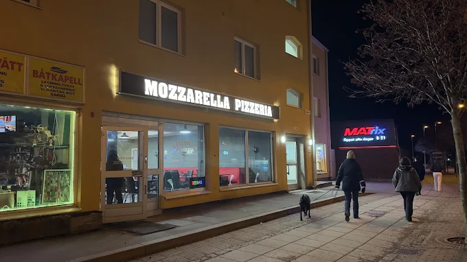

Vår historia
Mozzarella Pizzeria öppnade sina dörrar 2010 med en enkel vision – att servera äkta italiensk mat i hjärtat av Nynäshamn. Grundarna Giovanni och Maria Rossi flyttade till Sverige från Neapel med sina familjerecept och sin kärlek till mat.
Sedan starten har vi vuxit från en liten pizzeria till en omtyckt restaurang med ett brett utbud av italienska rätter. Vi använder alltid färska råvaror och lagar all mat från grunden.
Våra värderingar
- Färska råvaror av hög kvalitet
- Äkta italienska recept
- Välkomnande atmosfär för hela familjen
- Engagerad och vänlig personal
